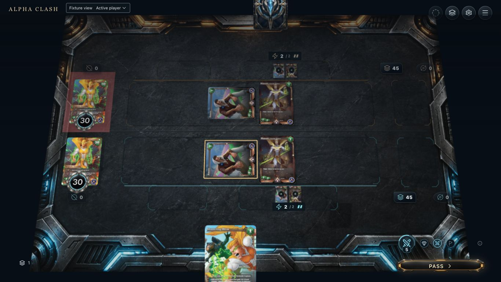
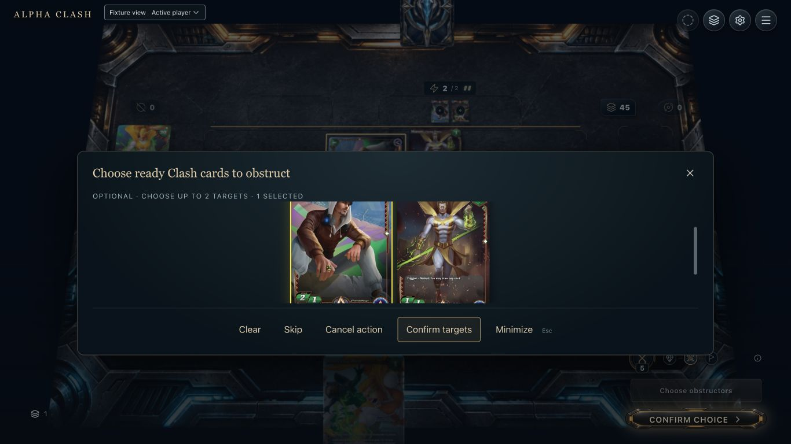
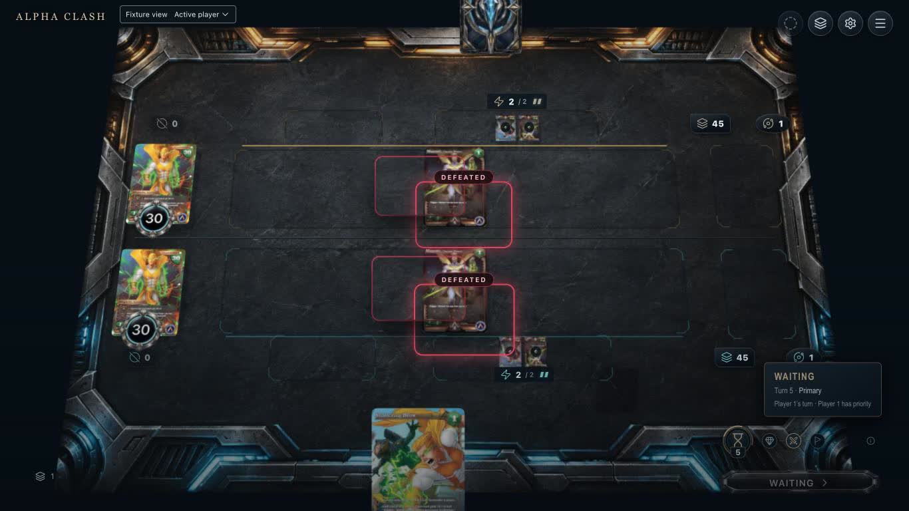
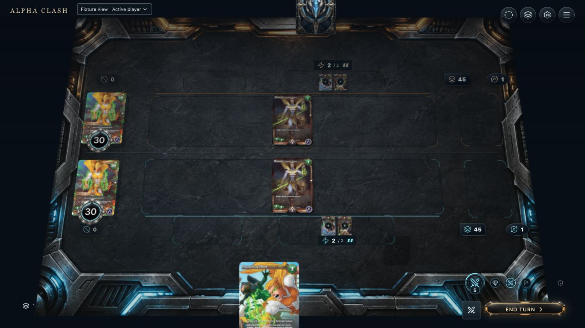

11. Available
Captured native Before damage board. Proposed: readable current stats and retained combat relation before the last Pass.
2. Hover / focus
Proposed over the captured decision board: outline the owing seat’s Pass control and named sources. Hover does not create a damage outcome.

33. Selected
Captured one Sonoro obstructor selected before Confirm. Retain this obstruction relation through the damage step; do not preview unsupported legal outcomes.
4. Pending
Proposed over the pre-pass baseline: accepted last input gets a concise status while prior authorized artwork remains available for transient ghosts. No separate pending damage state was captured.

55. Resolving
Captured at 0.45 seconds of the native recording. Current failure: DEFEATED outlines overlap surviving Magnates after recentering. Reserve departing Sonoro anchors/artwork instead.

66. Completed
Captured Primary: both Sonoro are in Oblivion, both players remain at 30 health, each Clash zone contains one Magnate. Native cleanup clears clash damage.